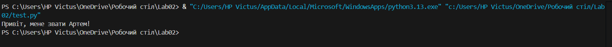

Про себе
Всім привіт, мене звати Артем, мені 18 років. Народився у місті Кременчук Полтавської області.
Наразі є студентом Полтавської політехніки і навчаюсь на спеціальності F7 "Комп'ютерна інженерія".
Мої хобі

Студент групи 101-ТК Полтавець А.О